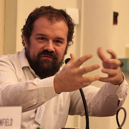

Future of the Internet Conference
Speakers
Agenda
Location
Registration
2018 Speakers
Cindy Cohn
Electronic Frontier Foundation
Cindy Cohn is the Executive Director of the Electronic Frontier Foundation.
Ethan Marcotte
Author of
Responsive Web Design
Ethan Marcotte is an independent web designer who pioneered responsive web design.
Elon Musk
Founder and CEO of SpaceX and Tesla
Elon Musk is the founder of four companies including SpaceX, Tesla, and Neuralink.
Ethan Zuckerman
Media scholar, Internet activist
Ethan Zuckerman is the director of the MIT Center for Civic Media.
Jeffrey Goldberg
Editor-in-Chief of
The Atlantic
Jeffrey Goldberg is the editor-in-chief at the Atlantic who is known for covering foreign affairs.
Jen Simmons
Executive Producer at
The Web Ahead
Jen Simmons is a host at
The Web Ahead
, as well as a designer advocate at Mozilla.
Kristy Tillman
Head of Communication at Slack
Kristy Tillman is a communication designer and has worked with Converse, Reebok, and Payless.
Michio Kaku
Theoretical Physicist and Futurist
Michio Kaku has written many books like
Physics of the Future
and
The Future of the Mind.

Massimo Banzi
Co-Founder of the Arduino Project
Massimo Banzi is an interaction designer and open source hardware advocate.
Top